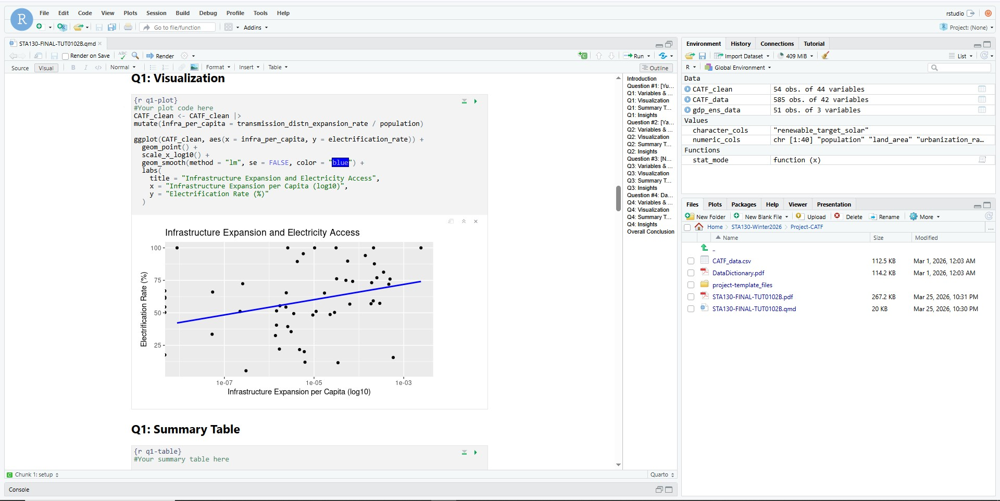
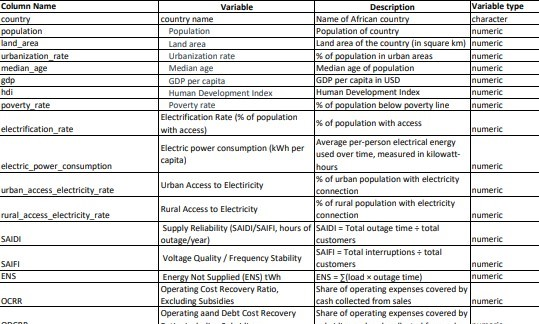

JupyterHub Dashboard
In this project, we analyzed electricity systems across African countries using real-world data. Our goal was to better understand what are the main factors that contribute to accessible electricity systems in Africa.
So we explored how factors such as infrastructure expansion, economic development, and poverty are associated with better electrification outcomes ⚡.
Note: We also presented our results at a poster fair.
This project was our STA130 final, where we applied everything we'd learned throughout the course to help
the Clean Air Task Force (CATF) Africa - a non profit organization that helps with the developement of energy systems across Africa - lay the groundwork for their Electricity Sector Performance Scorecard (CATF-ESPS).
Despite widespread reforms, electricity remains inaccessible, unreliable, and unaffordable across much of Africa, partly because policymakers lack structured indicators to diagnose problems and track progress.
Thus the goal of the CATF-ESPS was to be a composite index that would help policymakers and stakeholders identify key areas for improvement.
Our role was not to build the scorecard itself, but instead to explore the underlying data and generate insights that would inform its development. So things like how country-level characteristics, regulatory environments,
and sector attributes relate to outcomes across areas like access, affordability, financial viability, service quality, investment, governance, and sustainability.
And like most end of term projects, this project was open-ended: we were responsible for selecting a topic, forming research questions, and choosing appropriate statistical methods 💪.

Glimpse of data we had access toThe main challange of this project was balancing individual and group goals. The requirment was:
So we decided to analyze different factors that affected electricity accessibility. Thus all our research questions would revolve
around what factors contribute to better electrification outcomes, but we would each explore different factors and use different methods 😎. For example, I choose poverty rates, another choose infrastructure.
Then came the challange of selecting appropriate methods for each question. Since many variables were continuous, it was tempting to rely only on correlation-based approaches.
We eventually sat together and worked through to diversify our analysis by incorporating different techniques, such hypothesis tests.
The analysis tests themselves did not take long to code, but let's not forget the most fun part, debugging!
I remember one time we spent 2 hours debugging at the OISE library because our project refused to render, despite
the fact that nothing seemed wrong - in the end it turned out we had forgotten to put qutation marks our names 🤦.
It also took us a significant amount of time cropping our presentation to make it fit into 24 slides, and cutting our lines as well - 4 minutes is not really a lot of time ⏳!
Ultimately, we presented our findings at the poster fair (just needed 10 seconds more to wrap up our conclusion 😬).
I won't go into the niche details of our research - you can see my github link above for that - but the strongest
relationship we found was that higher poverty --> lower electrification rates.
But of course as that famous statistical saying goes, correlation does not imply causation, and there are many other factors at play.
Or for my philosophical leaders, Cum hoc ergo propter hoc.
This project was my first time ever dealing with data analysis, and it was a very enriching experience!
It helped me understand how statistical analysis is used in real life scenarios.
I also learnt how to choose appropriate analysis methods based on the data and the question at hand,
how to wrangle data, effectively interpret results, and communicate it to a general audience.
One of my biggest takeaways was the importance of critical interpretation. Statistical analysis is not just about producing graphs;
it requires understanding the limitations of the data and the correlation you just found,
while also keeping in mind that these observed relationships may be influenced by multiple underlying factors.
Overall, this project was a great introduction to the world of data analysis 📊, and I look forward to applying these skills in future projects!